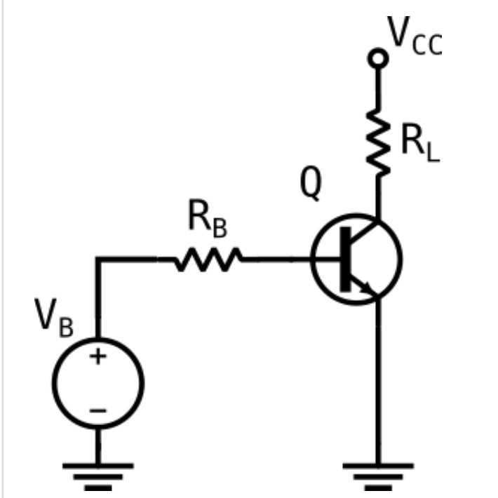

30. Quvvat tranzistori kalit sifatida va issiqlik hisobi
1. Tranzistor kalit sifatida: ON, OFF va oraliq
4-darsda: tranzistor = boshqariladigan kalit. Quvvat elektronikasida u katta yuklamani (motor, lampa, rele, isitgich) yoqib-o'chiradi. Undagi yo'qotish:
P = V · I (tranzistordagi kuchlanish × undan o'tayotgan tok)| BJT (bipolyar) | MOS (MOSFET) | |
|---|---|---|
| ON (yopiq kalit) | saturation (to'yinish): VCE = VCEsat ≈ 0.1…1 V | triode soha: VDS = ID · RON |
| OFF (ochiq kalit) | cutoff: IB = 0 → IC ≈ 0 (kichik sizish toki) | VGS < VT → ID ≈ 0 (IOFF) |
| Kuchaytirgich (kalit emas) | active soha | saturation soha (MOS da nomi boshqacha!) |
| Boshqarish | baza toki kerak: β·IB ≫ IC (chuqur to'yinish) | faqat gate kuchlanishi, doimiy tok yo'q (faqat CGS ni zaryadlash) |
| β | tok kuchaytirish IC/IB; quvvat BJT da kichik (5…20) | yo'q |
MOS afzalliklari (slayd): tezroq, haroratga kamroq bog'liq, boshqarish sxemasi oddiyroq. BJT xavfi: OFF holatda sizish toki qizdiradi → issiq → sizish oshadi → yana qiziydi … thermal runaway (issiqlik qochishi).
Eng katta quvvat o'tish paytida (aktiv soha, V va I ikkalasi katta). Shuning uchun kalitni tez almashtirish kerak; lekin tez almashtirish ko'proq EMI shovqin beradi: murosaga kelinadi.
029. Bipolar junction transistors operate as switches: a) in triode region b) in active region c) in saturation region d) with IB = β·IC
Javob
c) in saturation region. Diqqat: MOS uchun javob "triode" (6-dars, 081), BJT uchun "saturation". Ikkalasini adashtirmang.
062. For transistors, "β": a) is high for power transistors b) is the current gain of the metal-oxide-semiconductor transistors c) is the current gain of the bipolar junction transistors d) is the derating factor due to operating temperature
Javob
c). β = IC/IB faqat BJT da. Quvvat tranzistorlarida u past (a noto'g'ri).
Slayddagi mashq Ee1
A BJT is used as ON/OFF switch for a 100 Ω load, powered at 12 V. Transistor parameters: β = 50, VCEsat = 0.2 V. a. Draw the interface circuit to drive the BJT using a CMOS gate supplied with VDD = 5 V. b. Determine the maximum power dissipated in the transistor.
Yechim (slaydda yechim yo'q, men hisobladim)
a) "Low-side" ulanish (slayd): yuklama 12 V va kollektor orasida, emitter yerga, CMOS chiqishi baza rezistori RB orqali bazaga.
- IC = (12 − 0.2)/100 = 118 mA.
- Minimal baza toki IB = IC/β = 118/50 = 2.36 mA. Chuqur to'yinish uchun 2 marta zaxira: IB ≈ 5 mA.
- RB = (VDD − VBE)/IB = (5 − 0.7)/0.005 ≈ 860 Ω (masalan 820 Ω).
b) ON holatda: P = VCEsat · IC = 0.2 · 0.118 = 23.6 mW. OFF da ≈ 0. (O'tish paytida bir lahzada P max = (12/2)·(0.12/2) ≈ 0.36 W bo'ladi, lekin juda qisqa.)
2. Chegaralar: SOA va derating
Har bir qurilmaning to'rtta chegarasi bor: kuchlanish (V < Vbreakdown, aks holda teshiladi), tok (I < Imax, simlar eriydi), quvvat (V·I < PDmax), harorat (TJ < TJmax, kremniy uchun ≈ 150 °C). Ruxsat etilgan V, I, P oralig'i: SOA (Safe Operating Area, xavfsiz ishlash sohasi).
Derating (quvvatni kamaytirish): datasheetdagi PDmax odatda 25 °C uchun. Atrof issiqroq bo'lsa, issiqlikni chiqarib yuborish qiyinroq, demak ruxsat etilgan quvvat kamayadi; TA = TJmax da esa nol.
117. Power derating of electronic devices is due to: a) wearing during device operation b) ambient temperature c) junction temperature d) break-in period for new devices
Javob
b) ambient temperature (rasmiy javob). Grafikda gorizontal o'q = atrof harorati TA.
3. Issiqlik modeli: "issiqlik uchun Om qonuni"
Tranzistordagi quvvat kristall (junction, J) ichida issiqlikka aylanadi. Issiqlik kristalldan korpusga (case, C), korpusdan radiatorga (heatsink, S), radiatordan havoga (ambient, A) oqadi. Har bir yo'lning "qarshiligi" bor: issiqlik qarshiligi θ, birligi °C/W (1 W quvvat o'tganda necha gradus farq hosil bo'ladi).
| Issiqlik | Elektr o'xshashi |
|---|---|
| Quvvat PD (W) | tok manbai |
| Harorat T (°C) | kuchlanish; atrof harorati TA = kuchlanish manbai |
| Issiqlik qarshiligi θ (°C/W) | rezistor (ketma-ket qo'shiladi) |
Dizayner faqat θCS (korpusni o'rnatish, termopasta) va θSA (radiator, ventilyator) ni o'zgartira oladi; θJC korpusga bog'liq.
046. In the electric model of the thermal paths, the dissipated power is modeled by: a) a voltage source b) a current source c) a resistor d) is negligible
Javob
b) a current source.
075. In the electric model of the thermal paths, the ambient temperature is modeled by: a) a voltage source b) a current source c) a resistor d) is negligible
Javob
a) a voltage source.
085. In the electric model of the thermal paths, the thermal resistance is modeled by: a) a voltage source b) a current source c) a resistor d) is negligible
Javob
c) a resistor.
Slayddagi misollar (TIP30 tranzistori: θJA = 62.5 °C/W, θJC = 3.125 °C/W, TJmax = 150 °C)
- Radiatorsiz, PD = 0.8 W, TA = 25 °C: ΔT = 62.5 · 0.8 = 50 °C → TJ = 25 + 50 = 75 °C ✓.
- Radiator tanlash, PD = 5 W, TA = 50 °C: θJA ≤ (150 − 50)/5 = 20 °C/W. θJC = 3.125 → θCS + θSA ≤ 20 − 3.125 = 16.8 °C/W. Shundan kichik θ li radiator olinadi. (Radiatorsiz 62.5 °C/W bo'lardi: TJ = 50 + 312 °C, kuyadi!)
4. Imtihon masalasi: 2020-12, Question 4 (7 ball)
The saturation voltage of the transistor Q in the figure below is VCE = 1 V, its thermal resistance junction-to-ambient is θJA = 150 ºC/W, and its maximum junction temperature during operation is 125 ºC. With the transistor in saturation, the power dissipated on the resistive load RL = 8 Ω is 2 W. For the transistor operating in saturation, it is required to calculate: 1. the collector current, IC (1 point); 2. the power dissipated by the transistor, PQ (1 point); 3. the maximum ambient temperature TA (2 points); 4. the supply voltage VCC (3 points).

Yechim (rasmiy, qadam-baqadam)
- IC: RL dagi quvvat P = I²·R → IC = √(2/8) = √0.25 = 0.5 A.
- PQ = VCEsat · IC = 1 · 0.5 = 0.5 W.
- TA max: harorat farqi = PQ · θJA = 0.5 · 150 = 75 °C. TJ = TA + 75 ≤ 125 → TA ≤ 50 °C.
- VCC = RL dagi kuchlanish + VCEsat = 0.5 · 8 + 1 = 5 V.
Rasmiy javoblar: 0.5; 0.5; 50; 5.
Yana bir imtihon: 2021-06 masalasida (6-dars) TJ = 23 + (1.1 + 43) · 0.194 = 31.6 °C. Xuddi shu formula: θJC va θCA ketma-ket qo'shiladi.
O'zingizni tekshiring
Javob
30 + 75 = 105 °C.Javob
(150 − 70)/40 = 2 W.Javob
θJA ≤ 110/10 = 11 → θSA ≤ 11 − 2 = 9 °C/W.Javob
P = I²·RON = 16 · 0.05 = 0.8 W.Javob
IC = √(4.5/8) = 0.75 A; PQ = 0.75 W; ΔT = 112.5 °C → TA ≤ 12.5 °C.Yangi atamalar
| Atama | Inglizchasi | Ma'nosi |
|---|---|---|
| To'yinish (BJT) | saturation | BJT ning ON kalit holati, VCE = VCEsat |
| Berk holat | cutoff | OFF kalit, tok ≈ 0 |
| Tok kuchaytirish | β (hFE) | BJT da IC/IB |
| Kristall harorati | junction temperature TJ | Yarimo'tkazgich ichidagi harorat |
| Issiqlik qarshiligi | thermal resistance θ (°C/W) | 1 W da necha gradus farq |
| Radiator | heatsink | θSA ni kamaytiruvchi metall |
| Xavfsiz ishlash sohasi | Safe Operating Area (SOA) | Ruxsat etilgan V, I, P chegaralari |
| Quvvatni kamaytirish | derating | TA oshganda ruxsat etilgan PD kamayadi |
| Issiqlik qochishi | thermal runaway | Qizish → sizish ↑ → yana qizish |
📝 Konspekt (daftarga yozib oling)
- Issiqlik modeli: PD = tok manbai, TA = kuchlanish manbai, θ = rezistor.
- Kalit: BJT → saturation; MOS → triode. β faqat BJT, quvvat BJT da past.
- P max o'tish paytida → tez almashtirish (lekin EMI). Derating → ambient temperature.
- Javoblar: 029 c; 062 c; 117 b; 046 b; 075 a; 085 c; 2020-12 → 0.5 A, 0.5 W, 50 °C, 5 V; Ee1 → 118 mA, RB ≈ 860 Ω, 23.6 mW.